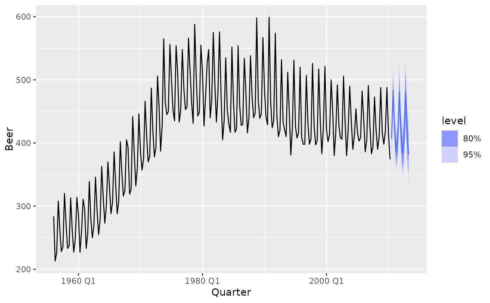

The forecast function allows you to produce future predictions of a time series
from fitted models. If the response variable has been transformed in the
model formula, the transformation will be automatically back-transformed
(and bias adjusted if bias_adjust is TRUE). More details about
transformations in the fable framework can be found in
vignette("transformations", package = "fable").
forecast(object, ...) # S3 method for mdl_df forecast( object, new_data = NULL, h = NULL, point_forecast = list(.mean = mean), ... ) # S3 method for mdl_ts forecast( object, new_data = NULL, h = NULL, bias_adjust = NULL, point_forecast = list(.mean = mean), ... )
| object | The time series model used to produce the forecasts |
|---|---|
| ... | Additional arguments for forecast model methods. |
| new_data | A |
| h | The forecast horison (can be used instead of |
| point_forecast | The point forecast measure(s) which should be returned
in the resulting fable. Specified as a named list of functions which accept
a distribution and return a vector. To compute forecast medians, you can use
|
| bias_adjust | Deprecated. Please use |
A fable containing the following columns:
.model: The name of the model used to obtain the forecast. Taken from
the column names of models in the provided mable.
The forecast distribution. The name of this column will be the same as the
dependent variable in the model(s). If multiple dependent variables exist,
it will be named .distribution.
Point forecasts computed from the distribution using the functions in the
point_forecast argument.
All columns in new_data, excluding those whose names conflict with the
above.
The forecasts returned contain both point forecasts and their distribution.
A specific forecast interval can be extracted from the distribution using the
hilo() function, and multiple intervals can be obtained using report().
These intervals are stored in a single column using the hilo class, to
extract the numerical upper and lower bounds you can use unpack_hilo().
if (requireNamespace("fable", quietly = TRUE)) { library(fable) library(tsibble) library(tsibbledata) library(dplyr) library(tidyr) # Forecasting with an ETS(M,Ad,A) model to Australian beer production beer_fc <- aus_production %>% model(ets = ETS(log(Beer) ~ error("M") + trend("Ad") + season("A"))) %>% forecast(h = "3 years") # Compute 80% and 95% forecast intervals beer_fc %>% hilo(level = c(80, 95)) beer_fc %>% autoplot(aus_production) # Forecasting with a seasonal naive and linear model to the monthly # "Food retailing" turnover for each Australian state/territory. library(dplyr) aus_retail %>% filter(Industry == "Food retailing") %>% model( snaive = SNAIVE(Turnover), ets = TSLM(log(Turnover) ~ trend() + season()), ) %>% forecast(h = "2 years 6 months") %>% autoplot(filter(aus_retail, Month >= yearmonth("2000 Jan")), level = 90) # Forecast GDP with a dynamic regression model on log(GDP) using population and # an automatically chosen ARIMA error structure. Assume that population is fixed # in the future. aus_economy <- global_economy %>% filter(Country == "Australia") fit <- aus_economy %>% model(lm = ARIMA(log(GDP) ~ Population)) future_aus <- new_data(aus_economy, n = 10) %>% mutate(Population = last(aus_economy$Population)) fit %>% forecast(new_data = future_aus) %>% autoplot(aus_economy) }#> Warning: 1 error encountered for lm #> [1] The `urca` package must be installed to use this functionality. It can be installed with install.packages("urca")#> Warning: no non-missing arguments to max; returning -Inf#> Warning: no non-missing arguments to max; returning -Inf#> Warning: Removed 10 row(s) containing missing values (geom_path).